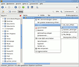
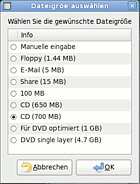
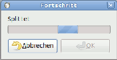
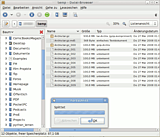
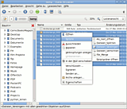
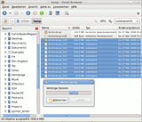
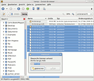
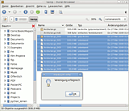
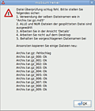

Splitten und Vereinigen
Dieser Artikel wurde für die folgenden Ubuntu-Versionen getestet:
Ubuntu 16.04 Xenial Xerus
Ubuntu 14.04 Trusty Tahr
Zum Verständnis dieses Artikels sind folgende Seiten hilfreich:
In Nautilus integriert gibt es die Funktion "Archiv erstellen". Hierbei fehlt die Option, das Archiv in mehrere Dateien zu unterteilen. Diese zwei Skripte sollen hier Abhilfe schaffen.
Installation¶
Diese Pakete sollten bei einer Standard-Installation [3] bereits vorhanden sein:
zenity
coreutils
 mit apturl
mit apturl
Paketliste zum Kopieren:
sudo apt-get install zenity coreutils
sudo aptitude install zenity coreutils
Die Installation von Skripten für Nautilus ist hier beschrieben.
Dateien splitten¶
Hiermit kann eine Datei gesplittet werden. Der Benutzer hat die Möglichkeit, eine Dateigröße auszuwählen oder manuell einzugeben. Zusätzlich wird eine Prüfsumme der Dateien erstellt und in einer zusätzlichen Datei gespeichert. Beim Vereinigen der Dateien werden diese Prüfsummen benutzt, um Dateien auf Fehler zu überprüfen.
Wenn man dieses Skript mit einem Editor öffnet[2], kann man das Erstellen dieser Prüfsummen abstellen. Wie, ist im Skript selbst unter "Benutzer Optionen" beschrieben.

| So läuft der Splitvorgang ab: | |||
|  |  |  |  |
| Datei auswählen | Größe wählen | Splitten abwarten | Fertige Dateien |
Dateien vereinigen¶
Mit diesem Skript werden diese Dateien wieder vereinigt. Der für die Ausgabe vorgeschlagene Dateiname sollte beibehalten werden, damit das Skript problemlos die Prüfsummen checken kann. Anhand der Prüfsummen stellt das Skript auch fest, ob das Vereinigen der Dateien erfolgreich war und gibt eine entsprechende, detaillierte Fehlermeldung aus.
Wenn man dieses Skript mit einem Editor öffnet, kann man das Überprüfen dieser Prüfsummen abstellen. Wie, ist im Skript selbst unter "Benutzer Optionen" beschrieben.
| So läuft die Vereinigung ab: | ||||
|  |  |  |  |  |
| Datei auswählen | Vereinigen | Überprüfen | Alles Ok | Fehlermeldung |
Ohne Skript vereinigen¶
Falls man diese Skripte nicht mehr zur Hand hat, kann man die gesplitteten Dateien mit einem Befehl im Terminal[1] wieder vereinigen:
cat Archiv.tar.gz_*
Vorher muss man selbstverständlich in das Verzeichnis der gesplitteten Dateien wechseln. Mit dem Befehl
md5sum -c Archiv.tar.gz.md5
werden die Prüfsummen überprüft (falls Prüfsummendatei vorhanden). Archiv ist durch den entsprechenden Dateinamen zu ersetzen.
 Übersichtsseite
Übersichtsseite- Erstellt mit Inyoka
-
 2004 – 2017 ubuntuusers.de • Einige Rechte vorbehalten
2004 – 2017 ubuntuusers.de • Einige Rechte vorbehalten
Lizenz • Kontakt • Datenschutz • Impressum • Serverstatus -
Serverhousing gespendet von